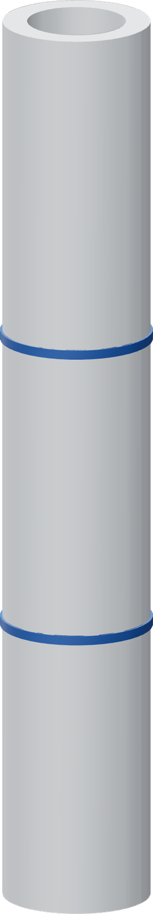

Two marks from the tube end
Measure from the bare tube's square-cut end before the thimble hides it. The cap thickness is 2.1 mm.

- Confirm a square, clean tube end and an open bore. Use the tube length specified for the faucet finish.
- Mark a fine line D - 2.1 mm from that end. This is the port-lip seat witness.
- Mark a second line D + 16.9 mm from the same end. This is the clamp-front mark.
- Keep the two lines distinguishable. The clamp-front line sits 19 mm farther up the tube than the port-lip witness.
For example only
If the actual D reading is 20.0 mm, the lines lie 17.9 mm and 36.9 mm from the tube end. Use your measured D.